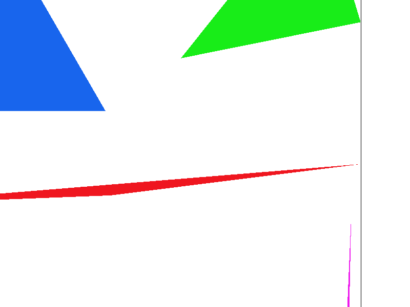
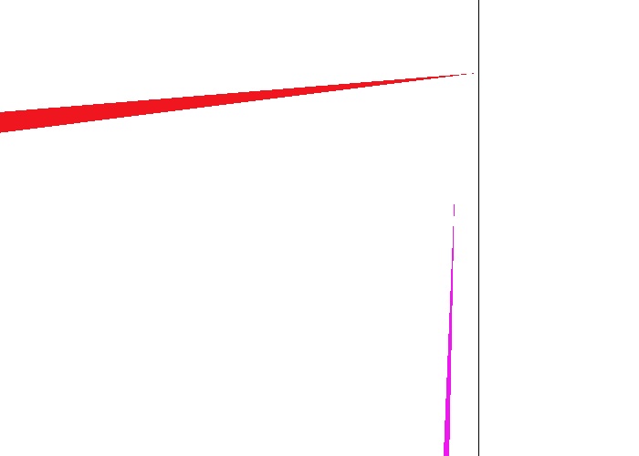
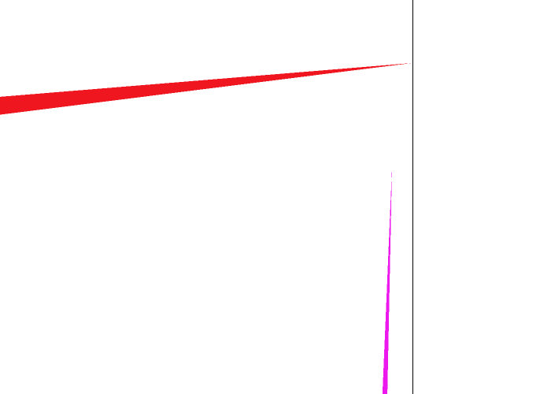
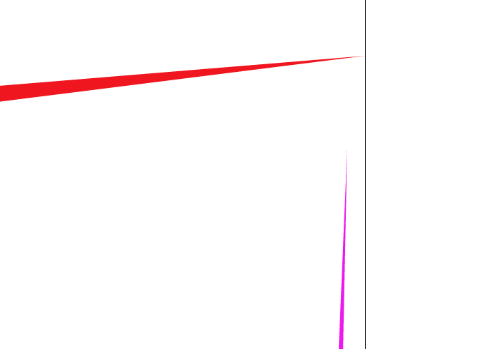
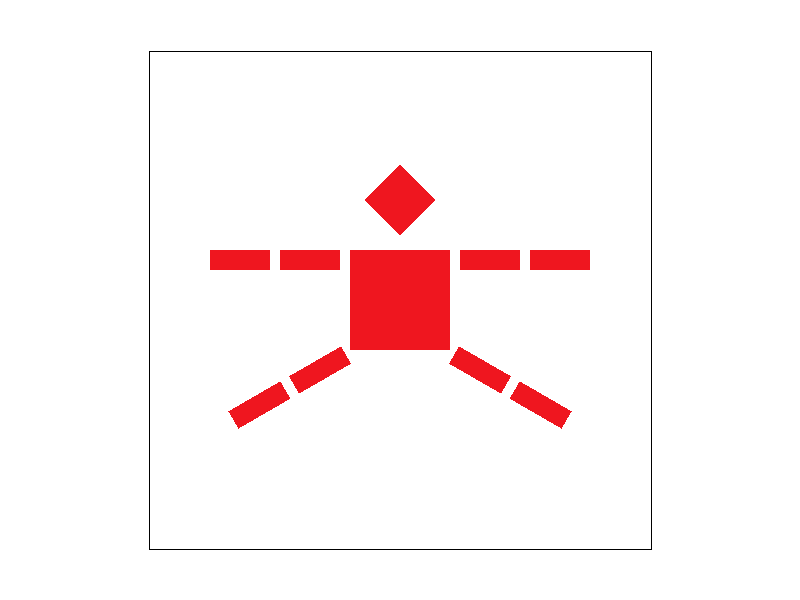

Overview
In this project I implemented a rasterizer that takes vertices for a triangle as input and reasterizes said triangle in the framebuffer. This rasterizer supports texture sampling and vertex color interpalation by using the barycentric coordinate algorithm. As someone who got into programming by making 3D games using OpenGL 1.0, I have been using rasterizers with these features for years, so building my own was very enlightening.
Section I: Rasterization
Part 1: Rasterizing single-color triangles
I decided that I would rasterize triangles by making use of the barycentric coordinate algorithm. By definition, if alpha, beta, and gamma are all between 0 and 1, then the pixel is in the triangle. This method is definitely slower than using three line test described in lecture, however, since I knew that I would need to implement this algorithm later on anyways, I figured it would just be easier to use it here to. I did implement the bare bones optimization of only testing pixels that are within the AABB (axis-aligned bounding box) of the trianle so that I don't have to search through every pixel on the screen for just one triangle.
This algorithm is no worse than one that checks each sample within the bounding box of the triangle because that is literally the algorithm I am using. Hence, it is exactly as bad as that.
Here is a screenshot of my fabulous rasterizer in action:
Part 2: Antialiasing triangles
I decided to implement supersampling by modifying the 'sample_buffer' variable inside the 'RasterizerImp' class to be a width x height x sample_rate 3D array. Then, to rasterize the framebuffer I simply looped through the sample_buffer and averaged out the "sample dimention" of the sample_buffer, leaving only a 2D width x height buffer that I then placed into the framebuffer.
I modified the 'fill_pixel' function to simply fill all the sample_buffer elemtents at (x, y) with the same color. When averaged out this will just result in the same color, preserving the functionality of the fill_pixel function that is used by the rest of the RasterizerImp class.
As for the triangle rasterization, I simply sampled each pixel multiple times at different points (i.e. the sample grid shown to us in lecture that has sqrt(sample_rate) spacing) and placed all those values into the sample_buffer elements at the (x, y). Therefore, when the averaging happens in the resolve_to_framebuffer function, the final framebuffer pixel is the supersampled result of all the samples I took reviously during the rasterization phase.
Images of my supersampling implementation are below:
|

|

|
|

|
Part 3: Transforms
Section II: Sampling
Part 4: Barycentric coordinates
We can express each point in a triangle as a linear conbination of the triangle's verticies. This change in basis is incredibly useful for linear interpolation of vertex properties of the triangle (such as color or uv coordinates for texture mapping).


Part 5: "Pixel sampling" for texture mapping
Part 6: "Level sampling" with mipmaps for texture mapping
Here is an example 2x2 gridlike structure using an HTML table. Each tr is a row and each td is a column in that row. You might find this useful for framing and showing your result images in an organized fashion.

|

|

|

|
Section III: Art Competition
If you are not participating in the optional art competition, don't worry about this section!